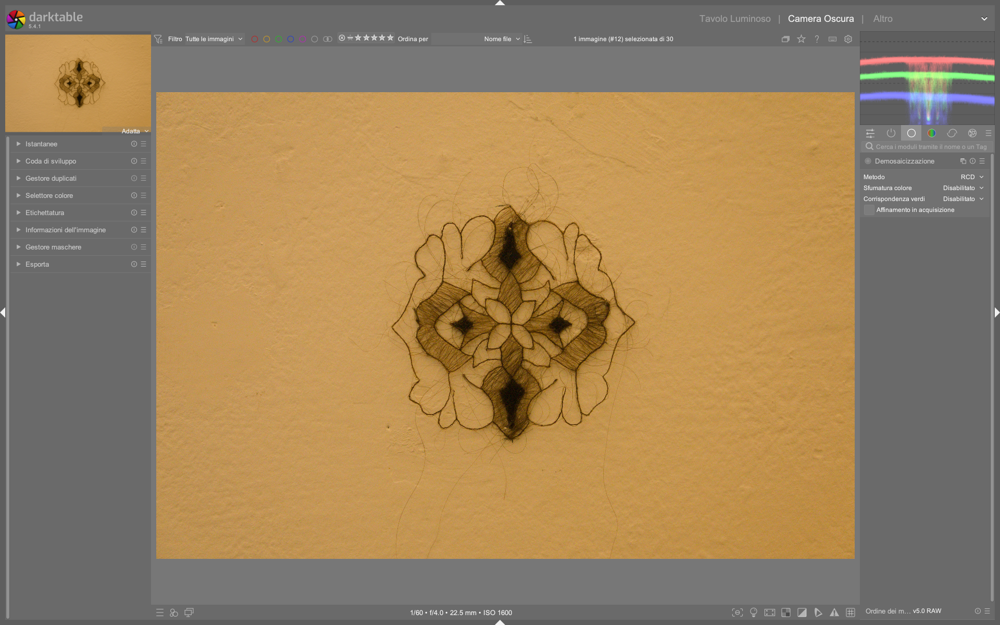

Demosaicing¶
Il modulo demosaicing è il primo modulo tecnico obbligatorio nella pipeline di elaborazione RAW di darktable. Ricostruisce l’intero spazio colore RGB da un singolo canale per pixel (disposto secondo il pattern del filtro Bayer o X-Trans), trasformando i dati grezzi del sensore in un’immagine visualizzabile con informazioni complete su rosso, verde e blu per ogni punto. È fondamentale per la qualità finale della nitidezza, della risoluzione cromatica e della gestione del rumore, specialmente a ISO elevati12.
Demosaicing è obbligatorio e non disabilitabile
Il modulo demosaic appare grigio e bloccato nella pipeline (non modificabile) in modalità darkroom perché è un passaggio tecnico indispensabile: senza di esso, i dati RAW rimangono una matrice di intensità monocromatiche e non possono essere interpretati come immagine RGB. Non è possibile saltarlo né bypassarlo3.
Panoramica¶
Il demosaicing opera immediatamente dopo raw black/white point e prima di white balance, input color profile e tutti i moduli creativi. La sua posizione è fissa nella pixelpipe, poiché lavora sui dati lineari più grezzi disponibili1. Il suo compito primario è:
- Interpolare i valori mancanti per ogni pixel (es. un pixel verde deve stimare i valori di rosso e blu adiacenti);
- Ridurre artefatti cromatici, come false colori (fringing) e moiré;
- Preservare la nitidezza fine senza introdurre aliasing o bordi frastagliati;
- Fornire una base stabile per i moduli successivi, in particolare per il
capture sharpenintegrato2.
A differenza di Lightroom — dove il demosaicing è completamente opaco — darktable espone tre livelli di controllo:
- Algoritmo principale (scelta tra RCD, AMaZE, Markesteijn, ecc.);
- Smoothing cromatico (per ridurre il rumore cromatico senza appiattire i dettagli);
- Capture sharpen (nitidezza applicata durante la ricostruzione, non dopo)4.
Flusso di lavoro consigliato¶
Il flusso ottimale per il demosaicing segue rigorosamente l’ordine fisico della pipeline scene-referred3:
1. raw black/white point (obbligatorio, non modificabile)
|
2. demosaic ← qui si sceglie l'algoritmo e si attiva capture sharpen
|
3. white balance (camera reference)
|
4. input color profile
|
5. exposure (posizionamento del grigio medio)
Capture sharpen va attivato prima del denoise
Il capture sharpen integrato nel modulo demosaic agisce sui dati lineari prima che il rumore venga amplificato dai moduli successivi. Attivarlo qui è molto più efficace (e meno rumoroso) che usare il modulo sharpen o diffuse or sharpen in seguito4.
Passo 1: Scelta dell’algoritmo¶
Per la maggior parte degli utenti, RCD (Raw Color Demosaicing) è il default bilanciato: veloce, robusto, con buona gestione del rumore e dei bordi1.
Per immagini ad alto ISO o con dettagli finissimi (macro, paesaggi), Markesteijn 1-pass offre maggiore precisione ma richiede più tempo di elaborazione2.
| Algoritmo | Velocità | Qualità | Raccomandato per |
|---|---|---|---|
| RCD | ⚡⚡⚡⚡ | ⚡⚡⚡ | Uso generale, editing batch, ISO fino a 3200 |
| AMaZE | ⚡⚡⚡ | ⚡⚡⚡⚡ | RAW con basso rumore, ISO < 800, massima fedeltà cromatica |
| Markesteijn 1-pass | ⚡⚡ | ⚡⚡⚡⚡⚡ | Macro, architettura, immagini ad alta risoluzione, ISO elevati2 |
| PPG | ⚡⚡⚡⚡⚡ | ⚡⚡ | Solo se necessario per compatibilità con vecchi preset |
Passo 2: Attivazione del Capture Sharpen¶
Il capture sharpen è un’ottimizzazione critica per la nitidezza intrinseca, applicata direttamente sulle bande di colore interpolate. I suoi parametri sono accessibili solo quando l’algoritmo scelto lo supporta (RCD, Markesteijn, AMaZE)4.
- Abilita: checkbox
capture_sharpen(default: disabilitato) - Iterations: numero di passaggi iterativi per affinare il kernel (range: 1–16, default: 8)
- Radius: raggio di azione del kernel in pixel (range: 0.2–2.0 px, default: 0.6 px)
- Contrast sensitivity: soglia minima di contrasto per attivare il sharpen (range: 0.0–1.0, default: 0.3)
- Corner boost: rinforzo dei dettagli agli angoli (range: 0.0–1.0, default: 0.0)
Non esagerare con radius e iterations
Un radius > 0.8 px o iterations > 12 introduce artefatti di overshoot (alone bianchi/neri ai bordi) e aumenta visibilmente il rumore cromatico. Valori oltre questi limiti sono raramente utili e quasi sempre dannosi4.
Parametri principali¶
| Parametro | Range | Default | Descrizione |
|---|---|---|---|
| Method | RCD, AMaZE, Markesteijn 1-pass, PPG, VNG4 | RCD | Algoritmo di interpolazione principale. RCD è il più equilibrato1. |
| Color smoothing | disabled, enabled | disabled | Riduce il rumore cromatico nei piani omogenei (es. cielo). Abilitare solo se si osservano false colori1. |
| Capture sharpen | on/off | off | Abilita la nitidezza integrata durante la demosaicing4. |
| Iterations | 1–16 | 8 | Numero di passaggi per affinare il kernel. Più alto = più preciso ma più lento4. |
| Radius | 0.2–2.0 px | 0.6 px | Estensione spaziale del kernel. Valori alti causano overshoot4. |
| Contrast sensitivity | 0.0–1.0 | 0.3 | Soglia minima di contrasto per attivare il sharpen. Valori bassi → più aggressivo4. |
| Corner boost | 0.0–1.0 | 0.0 | Rinforzo specifico per gli angoli. Usare solo per dettagli strutturali marcati4. |
Algoritmi avanzati e casi d’uso¶
Markesteijn 1-pass: per ISO elevati e dettaglio estremo¶
Introdotto in darktable 3.8, questo algoritmo è ottimizzato per immagini rumorose e per sensori Sony ARW, grazie a una stima statistica migliorata dei valori mancanti2. È l’unico algoritmo che supporta nativamente il capture_sharpen con controllo indipendente su luci/ombre, rendendolo ideale per:
- Fotografia notturna (ISO ≥ 6400);
- Macro con profondità di campo ridotta;
- Architettura con linee nette e texture complesse.
Valori tipici per Markesteijn + capture sharpen:
- Iterations: 10–12
- Radius: 0.5–0.7 px
- Contrast sensitivity: 0.25–0.35
- Corner boost: 0.1–0.2 (solo se necessario)2
AMaZE: per massima fedeltà cromatica (basso ISO)¶
L’algoritmo AMaZE (Adaptive Multi-Scale Averaging) è il più conservativo: minimizza le interpolazioni aggressive e preserva la purezza cromatica originale del sensore. È ideale per:
- Studio fotografico con illuminazione controllata;
- Scatti a ISO 100–400 su fotocamere Fujifilm X-Trans o Canon;
- Quando si pianifica un’elaborazione molto aggressiva in seguito (es. filmic rgb con alta latitude).
⚠️ Nota: AMaZE è più lento di RCD e non include corner boost. Il capture_sharpen è supportato, ma richiede valori più cauti (radius ≤ 0.5 px) per evitare artefatti1.
Dual demosaic: combinazione intelligente per zone eterogenee¶
Darktable supporta algoritmi duali come RCD + VNG4, che applicano due metodi distinti e li fondono in base alla struttura locale dell’immagine1. Questo approccio è particolarmente utile per immagini con aree ad alta frequenza (es. dettagli di tessuto, foglie) e aree a bassa frequenza (cielo uniforme, pareti lisce).
- Il primo algoritmo (es.
RCD) elabora i dettagli fini; - Il secondo (es.
VNG4) gestisce le zone omogenee con minor rumore cromatico; - La fusione avviene tramite una maschera di blending calcolata dalla varianza locale (gaussian-blurred luminance mask)1;
- Il parametro
switch dual thresholdregola la sensibilità: valori bassi (< 0.3) favoriscono RCD nelle zone più strutturate; valori alti (> 0.7) estendono VNG4 anche in zone leggermente strutturate1.
LMMSE: per immagini ad alto ISO con moiré preesistente¶
L’algoritmo LMMSE (Linear Minimum Mean Square Error) è progettato per immagini ad alto ISO caratterizzate da rumore strutturato o moiré già presente nei dati RAW1. Rispetto a RCD e AMaZE, LMMSE genera meno overshoot cromatico e gestisce meglio i pattern ripetitivi, ma richiede più tempo di elaborazione.
- Supporta il parametro
LMMSE refine(range: 0–16, default: 4), che aggiunge passaggi di ricombinazione dei canali rosso/blu per migliorare la stima dei valori mancanti1; - Non supporta
capture_sharpen; - È particolarmente efficace su sensori Canon e Nikon con ISO ≥ 3200 e su scatti con forti riflessi metallici o trame artificiali (tessuti, griglie)1.
Walkthrough da video tutorial¶
Esempio: Setup RCD + capture_sharpen per ritratto in studio¶
Da The Dragan effect in darktable (min 1:50)
1. Seleziona Method = RCD nel modulo demosaic;
2. Abilita capture_sharpen;
3. Imposta Iterations = 8, Radius = 0.6 px, Contrast sensitivity = 0.3;
4. Disattiva color_smoothing (non necessario su ISO 200–400);
5. Verifica il risultato zoomando al 100% su occhi e capelli: nessun fringing rosso/ciano, dettagli dei peli ben definiti4.
Esempio: Markesteijn 1-pass per macro notturna¶
Da darktable 3.8 What is new? (min 4:00)
1. Imposta Method = Markesteijn 1-pass;
2. Abilita capture_sharpen;
3. Regola Iterations = 12, Radius = 0.55 px, Contrast sensitivity = 0.28;
4. Attiva color_smoothing solo se si osservano falsi colori sul bordo di petali o ali d’insetto;
5. Usa display blending mask per verificare che la maschera copra uniformemente i dettagli fini senza lasciare buchi2.
Domande frequenti¶
Problema: Comparsa di false colori (fringing rosso/ciano) su bordi contrastati¶
Attiva color_smoothing e verifica che match greens sia impostato su full and local average (per sensori Bayer). Se persiste, passa a Markesteijn 1-pass o LMMSE1.
Problema: Immagine “troppo morbida” nonostante capture_sharpen abilitato¶
Controlla che capture_sharpen sia effettivamente supportato dall’algoritmo selezionato: PPG e VNG4 non lo supportano1. Inoltre, assicurati che Iterations ≥ 6 e Radius ≥ 0.4 px4.
Problema: Alto consumo CPU e rallentamenti durante l’anteprima¶
Disabilita color_smoothing, riduci Iterations a 6 per Markesteijn, e usa PPG solo per anteprime rapide. Su hardware limitato, evita AMaZE (il più lento)1.
Consigli operativi¶
Verifica il risultato con zoom 100% e maschera di sovrapposizione
Per valutare la qualità del demosaicing, usa Ctrl+1 per zoomare al 100% e attiva la maschera di sovrapposizione (O): evidenzia i falsi colori (fringing rosso/ciano) e i bordi instabili. Se compaiono alone cromatici, prova a abilitare color_smoothing o passa a Markesteijn1.
Non combinare capture_sharpen con altri moduli di nitidezza
Evita di usare contemporaneamente capture_sharpen, sharpen, diffuse or sharpen e local contrast. Questo crea una cascata di effetti cumulativi che distruggono la struttura naturale dell’immagine. Usa capture_sharpen una sola volta, all’inizio della pipeline4.
Ottimizzazione per prestazioni¶
Su hardware limitato (es. Mac Mini M4 Pro con GPU integrata), RCD garantisce il miglior rapporto velocità/qualità. Se l’elaborazione è lenta:
- Disabilita color_smoothing (è costoso);
- Riduci iterations a 6 per Markesteijn;
- Usa PPG solo per test rapidi o anteprime5.
Preset built-in del modulo demosaic¶
Darktable include preset preconfigurati per casi comuni, accessibili dal menu hamburger del modulo1:
| Preset | Quando usarlo | Note |
|---|---|---|
RCD default |
Uso generale, editing rapido | Basato su RCD con capture_sharpen disabilitato |
Markesteijn high-res |
Immagini ad alta risoluzione (≥ 45 MP), macro | Iterations = 12, Radius = 0.5 px, Contrast sensitivity = 0.25 |
AMaZE low-noise |
Studio, ISO ≤ 400, massima purezza cromatica | Radius = 0.45 px, Contrast sensitivity = 0.35, color_smoothing = disabled |
LMMSE noisy |
ISO ≥ 6400, immagini con moiré | LMMSE refine = 8, color_smoothing = enabled |
Riferimenti visuali¶

{kind=link}
Risorse aggiuntive¶
- darktable User Manual — Demosaic — Documentazione ufficiale completa1
- darktable 3.8 What is new? — Video tutorial (min 4:00) — Introduzione a LMMSE e Markesteijn2
- The Dragan effect in darktable — Video tutorial (min 1:50) — Dimostrazione pratica di
capture_sharpencon parametri reali4 - Darktable Scene referred recap — Video tutorial (min 2:00) — Posizionamento del modulo nella pixelpipe3
Fonti¶
-
darktable user manual - demosaic, https://docs.darktable.org/usermanual/development/en/module-reference/processing-modules/demosaic/ ↩↩↩↩↩↩↩↩↩↩↩↩↩↩↩↩↩↩
-
[ENG] darktable 3.8 What is new?, https://www.youtube.com/watch?v=5smugZ5pXN0&t=240 ↩↩↩↩↩↩↩↩
-
[ENG] The darktable pipeline for beginners, https://www.youtube.com/watch?v=1nPW6WPhhTo&t=90 ↩↩↩
-
[ENG] The Dragan effect in darktable, https://www.youtube.com/watch?v=EuvG0lh8OB8&t=110 ↩↩↩↩↩↩↩↩↩↩↩↩↩
-
[ENG] darktable with the new Mac mini m4 pro, https://www.youtube.com/watch?v=Aqu3ULnYugw ↩